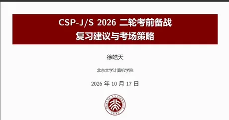
P01封面
CSP-J/S 2026 二轮考前备战
01:21
从录屏中逐帧还原，按原页序排列；每页标注了它在讲座里被讲到的时刻。点开看大图，可用 ← → 翻页。

P01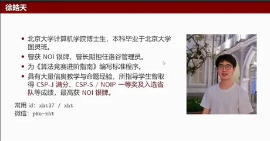
P02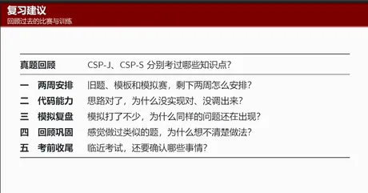
P03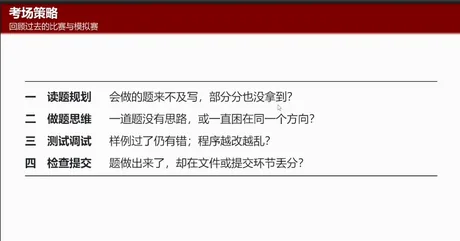
P04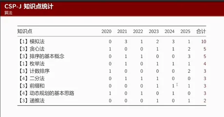
P05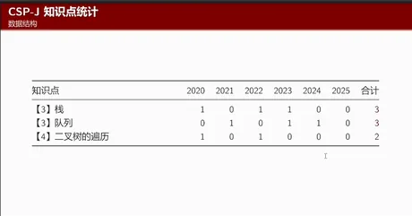
P06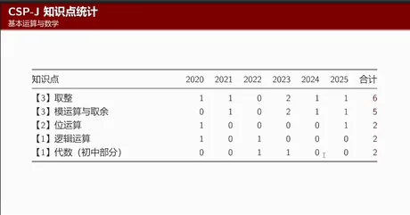
P07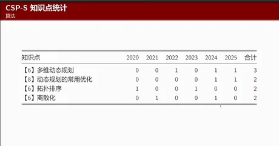
P08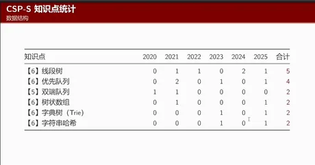
P09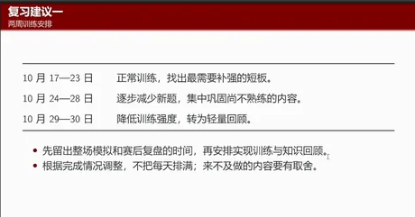
P10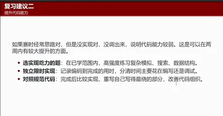
P11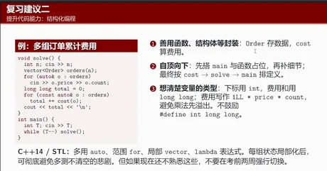
P12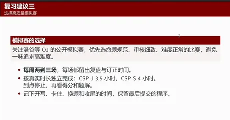
P13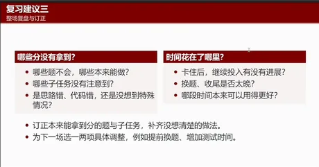
P14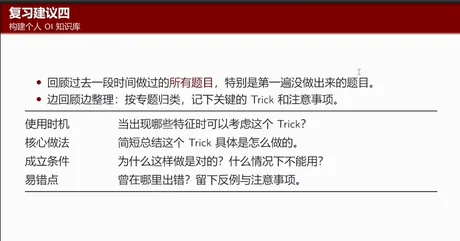
P15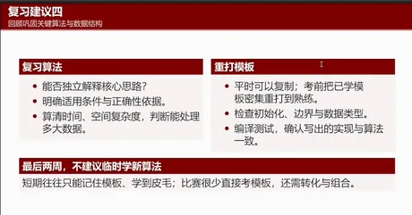
P16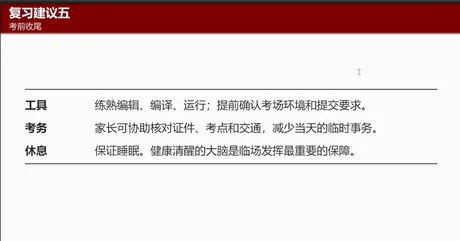
P17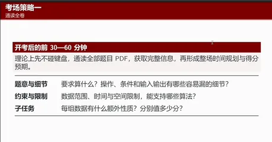
P18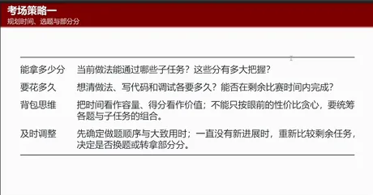
P19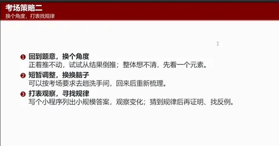
P20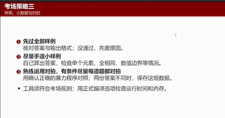
P21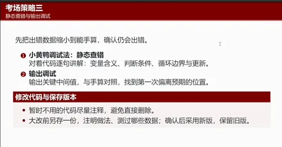
P22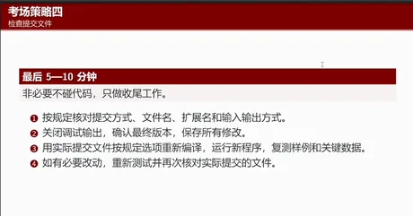
P23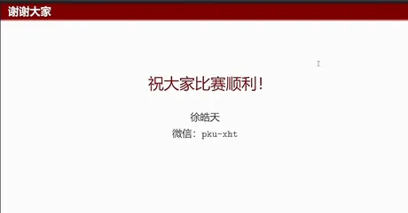
P24基于本地转录整理，口语已归并，未改变原意；录音含糊处保留标记，不补写。
主讲：徐皓天（北京大学计算机学院博士生）
场合：北京市信息学奥赛系列公益讲座 第八期
时长：42 分 49 秒（宣讲约 27 分钟 + 现场问答约 15 分钟）
来源：视频号录播（本地文件CSP-J_S 2026 二轮考前备战…_xWT111.mp4）
整理方式：mlx-whisper 本地转录后人工整理。录音含糊或无法确证处标 [待核对]，不做补写。
本版修订：已从视频中逐帧提取课件 24 页，用课件原文校订了 4 处录音疑似错字（见文末核对表）。
北京大学计算机学院博士生，本科毕业于北京大学图灵班；曾获 NOI 银牌；曾长期担任洛谷管理员，为《算法竞赛进阶指南》编写标准程序；有多年信奥教学与命题经验，所指导学生取得过 CSP-J 满分、CSP-S / NOIP 一等奖、入选省队，最高 NOI 银牌。
讲座分两块：复习建议与考场策略。
徐老师统计了与现行赛制相同的近六年 CSP-J / CSP-S 知识点，按大纲筛选出出现超过两次的算法并排序。
J 组：考的都是很经典的方法——模拟、贪心、排序之类。所以 J 组的算法部分不需要过多复习高级知识点，把最基本的东西打牢即可。
S 组（统计时剔除掉了 J 组已考的知识点，因为考 S 就该掌握）：主要算法从基础题转向动态规划——DP 一直是 CSP-S 的重点，基本上没有哪一年的 S 组是没有动态规划的；此外还包括多维 DP、DP 的常用优化、拓扑排序和离散化。
徐老师给出的节奏是"先留出模拟赛和赛后复盘的时间，再往里填具体训练与知识回顾"，而不是把每天排满——只剩两周，必须有所取舍。
| 阶段 | 日期 | 做什么 |
|---|---|---|
| 第一段 | 10 月 17 日—23 日 | 正常训练照旧，但要在训练中找出最需要补强的短板；结合上面那份知识点统计，锁定重点部分着重复习 |
| 第二段 | 10 月 24 日—28 日（五天） | 逐渐减少新题，把精力集中到巩固上：巩固"不熟悉但学过"的内容。这个阶段没有必要再学新的知识点 |
| 收尾 | 最后两天 | 降低训练强度，不用大量做题，但每天仍要花大量时间回顾整个学习内容 |
判断标准：平时比赛思路对但没实现出来、或者没调出来——说明当前阶段代码能力偏弱。徐老师认为这恰恰是两周内能取得较大提升的方面，可以专门训练：
具体到编程方式，他推崇结构化编程：
main 整个写完，solve 之类先占位，实现 solve 时更细的部分也先用函数占位——而不是"写到哪个函数就必须先把函数体写完再往后"。先有整体，再逐层下到细节。int 还是 long long，哪里要强制类型转换，变量的生命周期。他强调不鼓励 #define int long long 这类写法——有选手从入门到退役一直在跟这种写法带来的问题斗争。把类型想清楚再动手，本身就是在逼自己把每个细节想明白。auto、范围 for、vector、lambda 表达式都可以用。比如统一用 vector 而不是数组，能避免"多次不清空"的悲剧。但如果现在还不熟，不要在这两周强行切换；熟悉且有意愿才考虑。整场复盘看两件事：哪些分没拿到、时间花在哪里。具体追问：本来能做但没拿到分的题是哪些；哪些子任务本可以拿分却因为各种原因丢了；是思路错了、代码写错了，还是有 corner case 没想到；有没有被某道题卡了两三个小时（那显然不划算）；换题和收尾是不是太晚。如果一周打三四场，可以让每场各做一两项具体调整（比如提前换题、增加测试时间），最后一般能找到最适合自己的策略。
回顾过去一段时间做过的题，尤其是第一遍没做出来的那些——它们对你价值最高，是最可依赖的题目。边回顾边整理，按专题分类：
对每个 trick，记录四件事：
再往上一层是关键的算法与数据结构，可对照前面那份逐年统计来排查：
模板要练到熟练：平时训练可以复制，但考前要把常用模板密集重打到很熟练——不能在考场上把"原本 20 分钟能打完的代码"花一个多小时去调。顺带检查易错点：初始化、边界情况、数据类型。
最后两周不建议临时学新算法：短期只能学到模板和皮毛，而比赛很少直接考模板，还要转化与组合。临时学的即使真压中了，大概率也做不出来，不如把前面的巩固清楚。
他的判断很直接：一场比赛能拿多少分，在开考的前半小时到一小时基本就决定了——除非某道题你读完 10 分钟就特别有把握可以直接写，其余情况尽量先别碰键盘。
这段时间要做的事：
具体要估的量：这道题当前做法能过哪些子任务、这些分有多大把握、写完要多久、调完要多久。他给的提醒很具体：不可能"30 分钟调不出来就调 60 分钟，60 分钟不行就 90 分钟"，必须有一个把握与剩余时间的性价比计算。
他的原话是：最后剩一两分钟没事做、平复心情、估计一下考得怎么样，是比较满意的状态；最不满意的状态是最后一两分钟还在疯狂敲代码，到点没敲完，交了个 CE 的程序上去，原本能拿 60 分变成 0 分。
徐老师先讲了政策前提：他当年从高中开始学，那时还是自主招生时代；现在政策下是金牌保送、银牌强基，其余（铜牌、省一）对升学几乎没有直接作用（对初升高可能有点用）。
在这个前提下，他认为学竞赛只有两种合理情况：
最不推荐的是两者都不满足——就是他自己当年的情况：家庭兜底能力不强、没有出境后路，又想全面停课不学文化课。这种路径风险极大，除非你初一初二就有拿金牌的实力。北京的很多学校有比较科学的训练体系，跟着学校走就可以。
他不认为数学在信奥里是个"比其他板块更独特的存在"。反问道：为什么没人说要提前学数据结构、提前学 DP，偏偏数学要单独拎出来？
他的判断是：传统数学（数竞、高考数学）在信奥里只占很小比重，甚至是不太重要的比重。如果单纯为了信奥去提前学数学，不如把那个时间直接用来学信奥——数学有思维训练的价值，算法竞赛本身也有。除非你是数竞和信奥双修。
正确态度是把数学知识和算法知识一样，合理地纳入信奥体系中去学。
过去的标准答案只有一个：主动去找资源。资源不只是题目和模拟赛，还包括学习氛围——一个人单打独斗和在一个集体里学，状态完全不同。具体路径：去强省强校训练、去专业机构训练（现在很多强校和机构都接收外地选手）。
他也坦率讲了现实：他自己当年起步较晚，对现在的北京选手来说，初一才开始都有点显晚；如果当年有更好的资源，成绩可能更好。
AI 时代这个答案有变化：可以借助 AI 学习。国外的模型不必说，DeepSeek 现在完全可以承担"搭建训练体系、推荐题目"这类工作。他提到前几天和洛谷开发组、管理员交流，洛谷原本想做"做完一题推荐下一题"的智能推荐，现在 AI 已经能做得很好，而且便宜。他自己日常学习和工作、包括这次讲座的 PPT，都一定程度借助了 AI。
如果家庭经济条件允许，需要更针对性的训练，可以请专业教练、往年的金银牌选手做一对一或小班——他们的价值不只在知识点，还有生涯规划经验。他本人也在带学生，欢迎咨询，但这条路对家庭经济条件要求较高。
分两个层面。
小的层面（对现在的竞赛选手）：学信奥最大的意义，除了功利性的升学，是对自身思维能力的提升和训练。信奥接触的是一种很高级的思维，他自己现在的很多思考和决策，还在吃当年学 OI 的老本。
大的层面（AI 时代人类学算法的意义）：他认为这是个很宏大的命题，自己在 DeepSeek 实习时也有过很多类似讨论，并没有想得很明白。他提到南京大学蒋炎岩 [待核对：录音作"蒋燕燕教授"] 说过，信奥可能已经成为一种"非物质文化遗产"式的存在，可能没有实际意义了。
但他给出的落点是：既然没人能想清楚，那如果这件事能让你感到快乐、能从中感受到自我价值的实现，就去做——未来很多事情都可能变得没有意义，让自己开心快乐可能是最大的意义。所以学算法竞赛本质上应该是兴趣驱动；如果没兴趣、纯为升学逼着自己学，是没有意义的。
他先讲了门槛：现在 AI 软件越做越适合普通人用，最大的门槛其实是"先把软件下下来"。他推荐 DeepSeek Harness（比较方便下载）或用 Codex；下下来、充一点 API 的钱、先当聊天工具用，把日常生活里琐碎重复的工作先交给它——现在模型能力处理这些完全够用。需要更高智能的部分，国内模型相对国外最强模型还有差距。
用 AI 学习的流程（他本人的做法）：要学一个新领域时，先让它整体梳理一遍，然后一块一块地过——先讲清一个知识点是什么，讲完让它出一道题检验你是否真的掌握；听不懂的地方继续追问。它相当于一个非常全能、特别有耐心的老师，多蠢的问题都能问。代价是消耗 token、要花钱（DeepSeek 相对便宜）。
局限：他试过让 AI 写讲义、设计整套训练体系，最后发现很多工作还是要自己调。AI 给的训练体系很难精确到细节；PPT 这类也一样——能力到了之后会发现它"审美不到位"。所以现阶段他更倾向把 AI 当作帮你把烦的事情做掉的工具；完全不熟悉的领域，它能给你一个最简单的入门。真要学到深处，还是需要真人老师或咨询。
他的回答是"因题而异、因人而异，也因时而异"，这是个很综合的问题。他自己带学生时，前两节课就会先设计训练体系和生涯规划。
所以问题的本质不是"快刷还是啃难题"，而是投入的时间：不能指望每天投入一小时的选手，靠"高效学习"追平每天投入半天的选手；也不能指望打半天游戏的选手和全程投入的选手靠效率拉平。差距里天赋是一方面、时间是一方面，效率本身可能并不是最关键的那个变量。
这两周（按讲座给出的节奏）
考场内
| 位置 | 录音原样 | 处理 |
|---|---|---|
| 主讲人姓名 | 主持人念作"徐浩天" | ✅ 已由开场简介卡与课件 P2 确认为徐皓天 |
| S 组算法清单 | "2P 排序" | ✅ 已由课件 P8 确认为拓扑排序 |
| S 组数据结构 | "有线对列双段对写数量数组" | ✅ 已由课件 P9 确认为优先队列、双端队列、树状数组 |
| 字符串 | "字符的揣述" | ✅ 已由课件 P9 确认为字典树（Trie） |
| 南大学教授 | "蒋燕燕教授" | 仍按蒋炎岩（南京大学）写作，课件未涉及，待确认 |
| NOI 评测工具 | "self-evalued" | 应为 selfEval 类自测工具，课件未涉及 |
| 部分口语 | "流氧化明了""董事会对拍"等 | 按上下文写作"柳暗花明""动不动对拍"，语义无碍 |
课件为视频逐帧还原，分辨率 1130×593，非原始 PDF；如需精确排版请以现场为准。